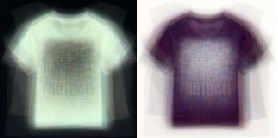

25.5 从事数据科学
翻阅数据目录固然不错，但是最好的项目（和产品）还是那些让人心动的。下面列举我做过的其中一些项目。
25.5.1 Hacker News
Hacker News（https://news.ycombinator.com/news ）是一个聚集并讨论与技术相关的新闻的网站。它收集了大量文章，但很多对我来说并不有趣。
因此，数年之前，我着手建立了一个 Hacker News 的内容分类器（https://github.com/joelgrus/hackernews ）来预测我是否喜欢某篇给定的文章。这一做法可能会受到有些 Hacker News 用户的排斥，他们会抱怨怎么还会有人不喜欢 Hacker News 的所有文章。
这项工作涉及对大量文章的手动标注（为了建立训练集），选择文章的特征（比如标题中的单词和链接的域），以及训练一个和之前我们做过的垃圾邮件检测类似的朴素贝叶斯分类器。
不知道出于什么心理，我当时是用 Ruby 建立的分类器。吸取我的教训吧。
25.5.2 消防车
我生活在西雅图市中心的一条主要街道上，这条街是从一个消防站去往城市里大多数火灾（或者看起来疑似火灾）的必经之地。由此，多年来我产生了对西雅图消防部门的兴趣。
幸运的是（从数据的观点），消防部门运行着一个实时的 911 网站（http://www2.seattle.gov/fire/realtime911/getDatePubTab.asp ），上面列出了每一次火警状况和出动的消防车。
所以，为了满足我的兴趣，我抓取了多年的火警数据并执行了关于消防车的社交网络分析（https://github.com/joelgrus/fire ），这就要求我创造了一个特定的关于消防车的中心性的概念，我称之为 TruckRank。
25.5.3 T恤
我有一个小女儿，她的童年有一件令我感到十分沮丧的事情，就是“女孩的 T 恤”大都很单调乏味，而“男孩的 T 恤”却都充满趣味。
尤其是，我觉得出售给男童和女童的 T 恤之间有很明显的区别。所以我问自己能不能训练一个模型来识别这些区别。
剧透：我能（https://github.com/joelgrus/shirts ）。
这项工作包括下载数百件 T 恤的图案，把它们改成同样的尺寸，再把它们转换为像素颜色的向量，最后使用逻辑回归建立分类器。
一种看起来较为简单的方法是针对每件 T 恤的颜色分类；第二种方法是找到 T 恤颜色向量的前 10 个主成分，然后把每件 T 恤投影到由 10 个“特征 T 恤”（eigenshirt）1 所组成的 10 维空间上进行分类（见图 25-2）。
1 即 10 个主成分。——译者注

图 25-2：对应于第一个主成分的特征 T 恤
25.5.4 你呢？
什么事情会让你兴致勃发？什么问题会让你夜不能寐？去寻找相关的数据（或者抓取一些网站），对它们做一些数据科学的分析吧。
告诉我你的发现吧！通过 joelgrus@gmail.com 给我发邮件，或者去 Twitter @joelgrus 找我。